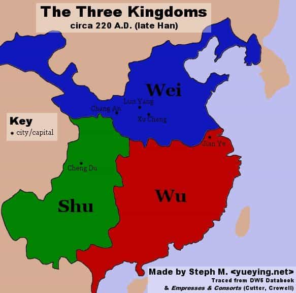
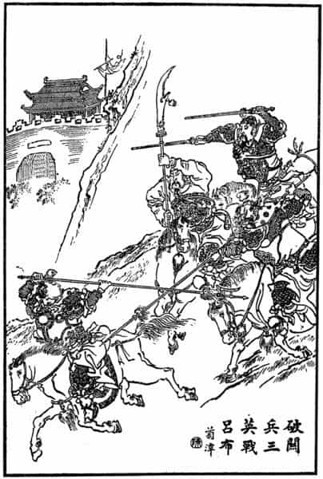
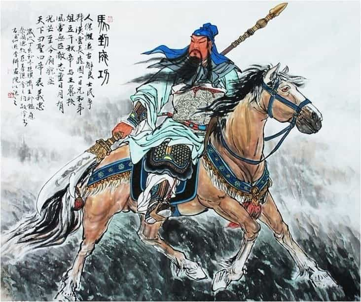
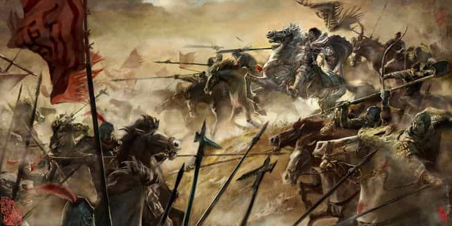

Corey is an iconoclast and the author of 'Man's Fight for Existence'. He believes that the key to life is for men to honour their primal nature. Visit his new website at primalexistence.com


The Romance Of Three Kingdoms is a historical novel written in the 14th century by Luo Guanzhong that chronicles the fall of Han dynasty and the rise of three kingdoms that vie in an epic struggle to rule all of China. Not only is this classic a literary masterpiece of the East, this is one of the greatest epic that demonstrates the true potential and the greatness of men.

The story features hundreds of characters and numerous secondary stories that spans a century from the Yellow Turban Rebellion to the eventual re-unification of China. The main characters are: Liu Bei, the honorable and compassionate descendant of the founder of Han dynasty who rises to prominence with the help of his sworn brothers, Zhang Fei and Guan Yu, in spite of his humble background; Caocao, the villainous hero whose combined brilliance and ruthlessness puts Machiavelli to utter shame and would eventually become the arch rival of Liu Bei; and the Sun family who are said to be direct the descendants of the famous author of the Art of War, Sun Tzu. Of course, those are just the few men who represent the three kingdoms, Shu, Wei, and Wu. There are dozens of more memorable characters of importance throughout this epic.
In spite of the title, we don’t see the three kingdoms established until about halfway point in the story. Up until then, we witness numerous factions of warlords and nobles fight one another to expand their own influence as the emperor no longer possesses any real authority. You see men rise and fall with their strengths, weaknesses, ambitions, duty, and fortune.

Throughout the book, we see countless acts of honor and loyalty, treachery and betrayal, bravery and cowardice, as well as stories of brotherhood, triumph, and revenge. But above all, power struggle is the main theme that perpetuates throughout the novel. Whether it be the sheer force of strength and determination on the battlefield or the use of coy traps, intrigues, and deception to manipulate the enemy, all that seems to matter is that one should come out victorious no matter the cost (and this is why Liu Bei is respected by other men in the story as being the most noble leader of all). It’s no surprise then that Robert Greene’s 48 Laws of Power features numerous anecdotes from the Three Kingdoms.

The use of military tactics and strategies are also one of the great features of this novel that has no other match. The way the characters penetrate each other’s minds for psychological warfare as well as the way human nature, the elements, terrain and weather, and various arsenals all come into play is simply sublime. Centuries after the book was published, Mao Zedong, a peasant with no formal military training, manged to lead his army of Communist guerillas to victory against the much larger and better equipped Nationalist forces. He did this not by reading the Art of War, but by drawing upon lessons he learned from reading the Three Kingdoms (as another bit of trivia, Caocao was his favorite character).
Also, notable in absence in the story are strong female characters we’re used to seeing in our modern times. In fact, there are only a handful of females throughout the entire novel who only play minor roles as mothers, consorts, and daughters offered for marriage. If anything, women are seen as distractions that detract men from achieving greater deeds if not outright baits to lure men into traps.

Statue of Guan Yu in Jingzhou.
One thing you must understand about the Three Kingdoms is its everlasting mythological influence on not just the Chinese culture, but also that of the other nations surrounding China.
The vast majority of Chinese, Koreans, and Japanese have read the book and are familiar with the story, and it continues to remain popular among these nations with people of all ages. Besides the novel itself, the story has spawned plays, movies, television series, dozens of video games, comics, anime series, action figures, collectible cards, and so on. Combine the cultural influence of Greek mythology to the modern fandom of Star Wars and you’ll start to get an idea of just how popular and enduring the love for Three Kingdoms is in East Asia—not bad for a novel written more than 600 years ago about historical events that happened in the 3rd century.
As recently as last year, a gigantic 1,320 ton statue of Guan Yu, one of the main protagonists, was completed in China (pictured above). Obviously, people in that region are still enthusiastic about the legends of the Three Kingdoms. So it’s safe to say that the legacy of this work will continue on to be an essential part of Chinese cultural consciousness for as long as China exists.

By reading the Three Kingdoms, you can start to appreciate why China, both as a nation and government, obsessively pursues the One China policy no matter how much criticism they face for being repressive and dictatorial. Ever since the first unification by the Qin Emperor, China has always valued strong central authority that allowed the nation to prosper. Whenever that central authority failed and the nation became divided, there had been nothing but chaos, rebellion, bloody civil wars, foreign invasion, and misery for the people until a new authority came about to reunite the nation once again to bring peace and harmony. The brutal internal strife depicted in this novel shows why the Chinese people are so determined to keep their nation together as one regardless of the cost.
Second, the Yellow Turban Rebellion depicted in the beginning of the story also explains why the Chinese government is intolerant of religious groups that may threaten its rule. It’s only understandable why the government so harshly cracks down on groups like the Falun Gong when you realize that such mass religious cults were what brought down dynasties and sowed chaos and disorder throughout the nation’s history. The more recent Taiping Rebellion, for example, was a civil war started by a man claiming to be the brother of Jesus that lasted for fourteen years with casualties that rivaled the First World War—if not higher. It’s no surprise then that a cult-like movement or a religious group that threatens the central authority of the current Chinese regime are targeted for persecution (I don’t justify the Chinese government’s actions, but only attempt to explain their motives).

Personally, I can say with ease that I learned more about life, manhood, and the nature of the world with the Three Kingdoms than all other works of fiction I’ve read combined. It is also one of the very few books that I’ve read more than once. In fact, I got so worked up by the thought of writing this article that I started reading it again for the fourth time. It’s just one of those rare works you must read and re-read again.
For those who are interested in taking the plunge, the best English version is generally accepted as the one translated by Robert Moss (be sure to get the unabriged edition). And for those who want a Kindle version (there doesn’t seem to be a digital version of Moss’s translation), newer translation by Ron Iverson is also well-received. There is also an entire manga series available for free here which could be better for those who want a lighter reading and may have difficulty visualizing ancient China.
Read More: The Most Sincere Autobiography Ever Written